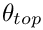
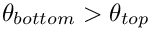
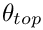
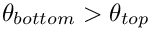
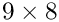
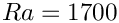

We study convection of an incompressible Newtonian fluid heated from below in a two-dimensional domain of height  : the Bénard problem. The lower wall is maintained at a temperature
: the Bénard problem. The lower wall is maintained at a temperature  and the upper wall is maintained at a temperature , where . The theory is described the non-refineable version of the problem.
and the upper wall is maintained at a temperature , where . The theory is described the non-refineable version of the problem.
In this example, we solve the same physical problem, but using refineable elements. As an alternative to the time-stepping procedure adopted previously, we perturb the trivial steady-state solution and re-solve the steady equations to obtain the steady symmetry-broken solution. In what follows, we shall only describe those parts of the code that differ from the non-refineable version.
The driver code
We start by setting the direction of gravity, and constructing the problem using the new RefineableBuoyantQCrouzeixRaviartElements, described below.
As discussed in the previous example, a small perturbation is required to force the solution from the trivial steady state of zero velocity and linear temperature variation. Therefore, we add a small perturbation to the vertical velocity on the upper wall before solving the steady problem, allowing for up to two levels of adaptive mesh refinement.
Having forced the solution into a non-trivial symmetry-broken state, we switch off the perturbation and re-solve the problem, allowing for another two levels of adaptive refinement. The Newton solver now converges to the unperturbed but symmetry-broken solution shown above.
The problem class
The problem class contains the constructor and (empty) destructor, the usual action functions, and an access function to the specific mesh used in this problem.
No specific action is required before the adaptation but following the mesh adaptation exactly one pressure degree of freedom must be pinned in the problem. (Since the domain is enclosed the pressure is only determined up to an arbitrary constant.) The pressure degree of freedom that was pinned before the adaptation may have disappeared during the adaptation, therefore the constraint must be re-applied. However, we unpin all pressure degrees of freedom first to ensure that we do not accidentally pin two pressure degrees of freedom.
The remaining member functions provide access to the boolean flag that controls the application of the imperfection, and document the solution:
The constructor
We pass the element type as a template parameter to the problem constructor, which has no arguments. The constructor builds a coarse initial RefineableRectangularQuadMesh, using  elements and allocates a spatial error estimator that is attached to the mesh.
Next, the boundary constraints are imposed. We pin all velocities and the temperature on the top and bottom walls and pin only the horizontal velocity on the sidewalls. As discussed above, a single pressure value must be pinned to ensure a unique solution.
We complete the build of the elements by setting the pointers to the physical parameters and finally assign the equation numbers
The function fix_pressure(...)
This function is a simple wrapper to the element's fix_pressure(...) function.
The function actions_before_newton_solve(...)
The function is used to set the specific values of the Dirichlet boundary conditions. If the boolean flag Imperfect is true then a small mass-conserving imperfection is added to the velocity boundary condition on the top wall.
The function doc_solution(...)
This function writes the complete velocity, pressure and temperature fields to a file in the output directory specified in the DocInfo object.
Creating the new RefineableBouyantQCrouzeixRaviartElement class
As in the non-refineable version of the problem we create the refineable element RefineableBuoyantQCrouzeixRaviartElement by multiple inheritance from the RefineableQCrouzeixRaviartElement and RefineableQAdvectionDiffusionElement:
Many of the additional member functions required in the combined multi-physics element are identical to those in the non-refineable version:
- the access function to (the pointer to the) Rayleigh number,
ra_pt(), - the output functions,
output(...), - the function
required_n_value(...)which specifies the number of values required at each node, - the function
u_index_adv_diff(...)which specifies the index at which the temperature is stored within the elements'Nodes, - the function
get_wind_adv_diff(...)which specifies the "wind" in the advection diffusion equations in terms of the Navier-Stokes velocities, - the function
get_body_force_nst(...)which specifies the body force in the Navier-Stokes equations in terms of the temperature. - the two "fill in" function are implemented as in the non-refineable element. The function
fill_in_contribution_to_residuals(...)concatenates the contributions from the two underlying elements; the functionfill_in_contribution_to_jacobian(...)computes the coupled elemental Jacobian matrix by finite-differencing.
We shall only discuss those additional functions that are required in the refineable version of the combined multi-physics element.
Both constituent elements are derived from the ElementWithZ2ErrorEstimator base class and each element provides its own definition of the "Z2-flux" that is used by the Z2 error estimator to compute elemental error estimates. We must decide on a single error estimator for the combined element. We could base the error estimation entirely on the fluid flow, or the temperature field, but instead we shall choose our single error estimate to be the maximum of the fluid and temperature error estimates. The functions required by the Z2ErrorEstimator are overloaded to return all the flux terms associated with both the velocity and temperature fields, with the velocity field terms stored first.
The default behaviour of the Z2 error estimator is to combine all components of the flux vector into a single compound flux. In the present multi-physics element, we instead define two compound fluxes: one corresponding to the combined temperature fluxes and the other to the combined velocity field fluxes. The flux components associated with each compound flux must specified by overloading the function get_Z2_compound_flux_indices which returns a vector of the same length as the number of flux components, containing the index of the compound flux to which the flux component contributes.
The Z2ErrorEstimator calculates the error estimates for each compound flux. The individual error estimates are then combined to a single error estimate by the function Z2ErrorEstimator::get_combined_error_estimate(). By default the single error estimate is chosen to be the maximum of all calculated error estimates. Alternative user-defined functions can be specified via the function pointer Z2ErrorEstimator::CombinedErrorEstimateFctPt& combined_error_fct_pt(), see Comments for a more detailed discussion of this aspect.
The vertex nodes are defined by the underlying geometric element, but require a final overload to prevent ambiguities:
The number of continuously interpolated values is DIM + 1: DIM velocity components and one temperature.
The two versions of the get_interpolated_values(...) function must return the continuously interpolated variables at a specified position within the element:
Finally, the setup and build functions must call the build functions of the two constituent elements. In addition, the pointer to the Rayleigh number must be passed to the sons after refinement.
Comments and Exercises
Comments
- Error estimation for multi-physics elements
The error estimation for the combined multi-physics element is performed with theZ2ErrorEstimatorwhich computes an error estimate based Zienkiewicz and Zhu's flux recovery technique, using the elemental "Z2 flux" defined in the pure virtual functionget_Z2_flux(...). The two constituent elements already provide their own implementation of this function:
- In the
RefineableQAdvectionDiffusionElementthe temperature gradient is used as the flux.
- In the
RefineableQCrouzeixRaviartElementthe flux is defined by the components of the fluid's rate of strain tensor.
In the example above, we chose an error estimate that was the maximum value of the individual error estimates for the Navier-Stokes flux and the temperature flux. Refinement will be performed if either of the single-physics error estimates are above the chosen thresholds. It is also possible to base the error estimation entirely on the Navier-Stokes fluxes; an appropriate choice for problems in which the variations in the velocity field are expected to be much more rapid than those in the temperature field. Alternatively,
the error estimation could be based exclusively on the temperature field; a choice that would be appropriate for problems with thin thermal boundary layers. The different error estimates can all be specified by user-defined functions that combine the vector of compound-flux error estimates into a single number. For example, the functionspecifies that the combined error estimate is the first of the compound error estimates — the error estimate for the Navier–Stokes equations.double navier_stokes_flux_error(const Vector<double> &errors){return errors[0];}
In the current example both fields vary very smoothly, and as a result spatial adaptivity is not really required in this problem. This is why we set a very narrow range of target errors – if the default targets are used,oomph-librefines the mesh uniformly. - In the
Exercises
- Confirm that for a Rayleigh number of  the system is stable, i.e. it returns to the trivial state, when the perturbation to the vertical velocity on the upper wall is switched off.
- Re-write the multi-physics elements so that the temperature is stored before the fluid velocities. Confirm that the solution is unchanged in this case.
- Try using
RefineableQTaylorHoodElementsas the "fluid" element part of the multi-physics elements. - Change the error estimate to be based entirely on the error in the Navier–Stokes fluxes by using a user-defined function. Is there any difference in the refinement pattern?
Source files for this tutorial
- The source files for this tutorial are located in the directory:
demo_drivers/multi_physics/boussinesq_convection/
- The driver code is:
demo_drivers/multi_physics/boussinesq_convection/boussinesq_convection.cc
- The source code for the elements is in:
src/multi_physics/boussinesq_elements.h
PDF file
A pdf version of this document is available. \